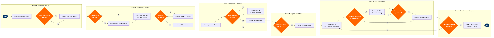

| Step | L4 Step Name | KPI / Target | Pain Point / Risk | Gate |
|---|---|---|---|---|
| 1.1 | Monitor flight disruption alerts | Detection-to-action time ≤10 min; alert integration latency ≤5 min | Altéa PSS and Jeppesen do not sync in real-time; 5–15 min lag in crew impact visibility causes delayed recovery initiation | |
| 1.2 | Classify disruption type and scope | Classification accuracy ≥95%; classification time ≤5 min | Weather-driven systemic disruptions affecting 50+ crew members simultaneously overwhelm manual classification; no automated severity scoring in Jeppesen | ⚠ |
| 1.3 | Extract affected crew roster | Roster extraction time ≤5 min; crew data accuracy ≥98% | Crew position data lags if crew fail to check in via mobile app; roster inaccuracies force manual verification calls adding 10–20 min | |
| 2.1 | Validate FAR Part 117 duty time status | Duty time calculation accuracy 100%; 0 regulatory violations per post-flight audit | FAR Part 117 augmented crew provisions and cumulative fatigue risk calculations are complex; manual overrides risk non-compliance and FAA enforcement action | ⚠ |
| 2.2 | Check crew qualifications and type ratings | Qualification verification ≤3 min per crew member; 0 unqualified crew assigned | Narrowbody/widebody type rating mismatches restrict recovery options on mixed fleets; qualification database refresh latency causes stale records | |
| 2.3 | Identify available reserve crew resources | Reserve utilization rate ≤85% to maintain buffer; reserve call-out success rate ≥90% | Reserve pool depletion during systemic weather events; seniority-driven CBA bidding limits scheduling flexibility and overrides optimizer suggestions | ⚠ |
| 3.1 | Run automated re-pairing optimizer | Optimizer run time ≤8 min; automated solution coverage ≥95% of disrupted pairings | Jeppesen optimizer produces sub-optimal solutions under tight time windows; cost parameter tuning requires experienced scheduler intervention to avoid excessive deadhead costs | |
| 3.2 | Evaluate deadhead and positioning options | Deadhead seat availability rate ≥70%; deadhead cost per re-pairing ≤$800 | No automated deadhead booking integration between Jeppesen and Altéa PSS; competing passenger demand on sold-out recovery flights blocks crew positioning | ⚠ |
| 3.3 | Apply manual overrides for exceptional cases | Manual override rate ≤15% of total re-pairings; override documentation compliance 100% | Manual overrides are audit-tracked by labour unions and must be defensible under CBA; pressure to minimise them conflicts with operational necessity during major disruptions | ⚠ |
| 4.1 | Validate full re-pairing plan legality | 100% compliance pass rate before plan activation; 0 post-departure duty violations | Real-time legality checks may not capture late-reported duty changes; crew self-reporting of off-system duty time creates hidden violations discoverable only at post-flight audit | ⚠ |
| 4.2 | Assess CBA cost impact and premium pay flags | Re-pairing cost premium ≤$1,200 per disrupted pairing; CBA rule flag accuracy ≥98% | CBA minimum-day compensation, missed connection pay, and hotel expense rules trigger unexpected premium costs not modelled in Jeppesen; finance reconciliation with SAP is manual | |
| 5.1 | Notify affected crew via CrewConnect and ACARS | Notification delivery rate ≥98%; crew acknowledgment within 30 min for ≥85% of assignments | Crew connectivity gaps in airports without WiFi; ACARS coverage limited to airborne crew; personal device management policy inconsistency across crew bases | |
| 5.2 | Confirm crew acknowledgment and acceptance | Crew acceptance rate on first notification ≥80%; escalation rate ≤20% | Crew refusals citing CBA rest-period disputes or training conflicts require union liaison review before escalation; each dispute adds 20–40 min to recovery timeline | ⚠ |
| 5.3 | Escalate unresolved crew assignments | Escalation resolution time ≤60 min; crew replacement sourced within 90 min of escalation | Union grievance procedures can extend resolution beyond the operational window; documented escalation playbooks are inconsistent across crew bases and crew categories | ⚠ |
| 6.1 | Monitor re-pairing execution in real-time | Re-pairing execution compliance rate ≥92%; real-time tracking lag ≤5 min | Multi-airport simultaneous disruptions create monitoring overload; a single controller may track 20+ active re-pairings with no auto-escalation in Jeppesen for critical deviations | ⚠ |
| 6.2 | Update crew records and close disruption event | Record update within 2 hours of final flight completion; data accuracy ≥99.5%; pay discrepancy rate ≤0.5% | Jeppesen-to-SAP SuccessFactors payroll integration latency causes pay discrepancies that generate crew queries and manual reconciliation effort averaging 45 min per affected pairing |